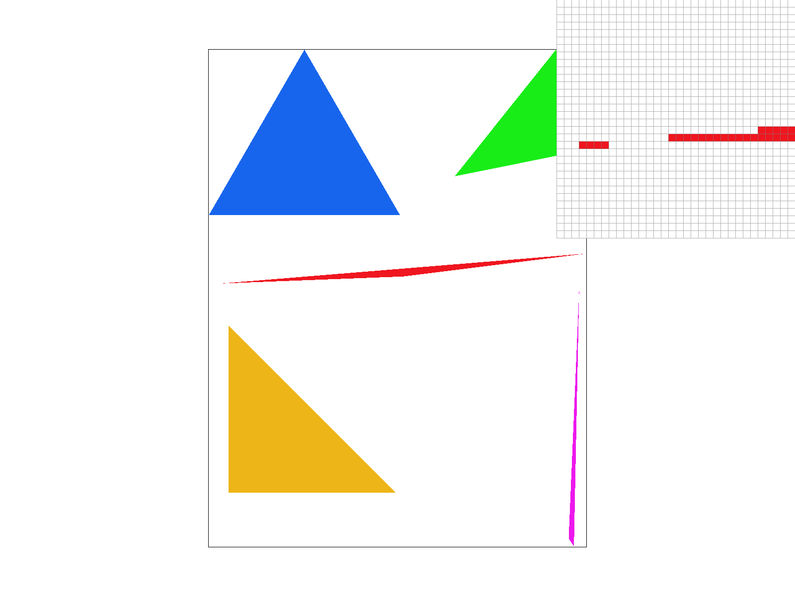
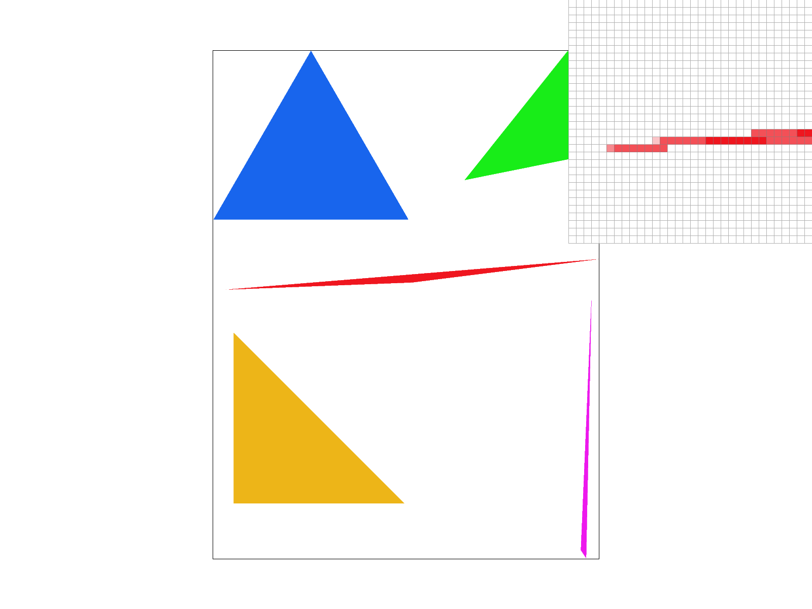

Task 2: Antialiasing by Supersampling
How did we supersample?
- The main idea behind supersampling is to partition each individual pixel into smaller sections so that we can increase the sampling density, resulting in a more finer detail output.
- To draw the actual pixels on to the screen, a section of the rasterization pipeline includes resolving the sample buffer to the framebuffer.
The sample buffer contains CGL Color data types; however, the framebuffer is an array of floats so "resolving" simply means converting the Color types into floats.
- When we supersample, we can increase or decrease the sampling rate. To accomodate the sampling rate change, we have to modify a couple of places. First, we have to adjust the size of the sample_buffer depending on the sampling rate. In
RasterizerImp::set_sample_rate we resize the sample buffer to sample_rate * width * height. We do the same in RasterizerImp::set_framebuffer_target.
- In our main rasterization logic in
RasterizerImp::rasterize_triangle, we multiply our loop start and end bounds by sqrt(sample_rate) to increase/decrease the density of the grid. To calculate the new coordinate of the sample point, we need to additionally find the inner offset of supersample pixel in relation to the main coordinate before we supersampled.
- Pixel coordinate (without supersample offset): \((\frac{x}{\sqrt{sample\_rate}}, \frac{y}{\sqrt{sample\_rate}})\)
- Supersample offset: \((x \bmod \sqrt{sample\_rate}, y \bmod \sqrt{sample\_rate}) \)
Putting it all together, our supersample pixel coordinate would is \((pixel\_x + \frac{(ss\_offset\_x + 0.5f)}{\sqrt{sample\_rate}}, pixel\_y + \frac{(ss\_offset\_y + 0.5f)}{\sqrt{sample\_rate}})\)
To set the correct index in the sample buffer, the updated index is \((y * width + x) * sample\_rate + ss\_offset\_y * \sqrt{sample\_rate} + ss_offset_x\)
- Modifying
RasterizerImp::fill_pixel:
- For a pixel, we need to fill in all of the supersampled pixels to fix points and lines as we don't really care about supersampling for them. So within this function, we just fill the supersample pixels the same color.
- Averaging pixels in
RasterizerImp::resolve_to_framebuffer:
- The final step of supersampling is to average the neighboring pixels and set it back to the main pixel. In
RasterizerImp::resolve_to_framebuffer, we are taking the average color rgb values from all the supersampled pixels of area \(sample\_rate\) to set it to the pixel in the framebuffer representing all of the supersampled pixels.
basic/test4.svg supersampling rate comparisons:
|

sampling rate 1 per pixel
|

sampling rate 4 per pixel
|
|
sampling rate 16 per pixel
|
explaination of results:
We can see that as the sampling rate per pixel increases, the averaging of neighboring pixels becomes more apparent. When we sample 1 per pixel, there are missing gaps and artifacts as a result of this aliasing.
As we increase the sampling rate, the averaging step that we perform in RasterizerImp::resolve_to_framebuffer helps "fill" in the gap to provide a more smooth edge so that it looks more continuous.
Since we are subdividing a pixel into more squares, when we average it acts like a low pass filter so that the averaged pixel smooths out sharp discontinuities and reduces high frequencies.